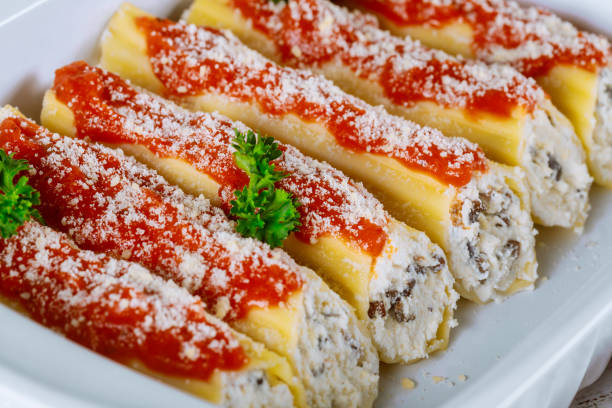

Manicotti Recipe

Description
Manicotti is an Italian-American dish featuring large pasta tubes stuffed with a rich ricotta cheese filling,
often accompanied by spinach and topped with marinara sauce and melted mozzarella.
It’s a comforting, oven-baked meal that’s perfect for family dinners or holiday gatherings.
This recipe guides you through preparing homemade or store-bought manicotti shells filled with a
creamy mixture and finished with bubbling cheese and a touch of fresh basil.
Ingredients
- 14 manicotti shells
- 15 oz ricotta cheese
- 2 cups shredded mozzarella cheese
- 1/2 cup grated Parmesan cheese
- 1 egg
- 1 cup chopped spinach (optional)
- 1 jar (24 oz) marinara sauce
- Salt and pepper to taste
- Fresh basil for garnish (optional)
Steps
- Preheat oven to 350°F (175°C).
- Cook manicotti shells according to package directions, then drain and cool.
- In a large bowl, mix ricotta, 1 1/2 cups mozzarella, Parmesan, egg, spinach, salt, and pepper.
- Spoon the filling into a piping bag or zip-top bag with the tip cut off.
- Gently fill each shell with the ricotta mixture.
- Spread a thin layer of marinara sauce on the bottom of a baking dish.
- Arrange the filled shells in the dish and cover with remaining sauce.
- Sprinkle remaining mozzarella cheese on top.
- Cover with foil and bake for 25 minutes, then remove foil and bake another 10 minutes until cheese is bubbly.
- Garnish with fresh basil before serving.
Home Page